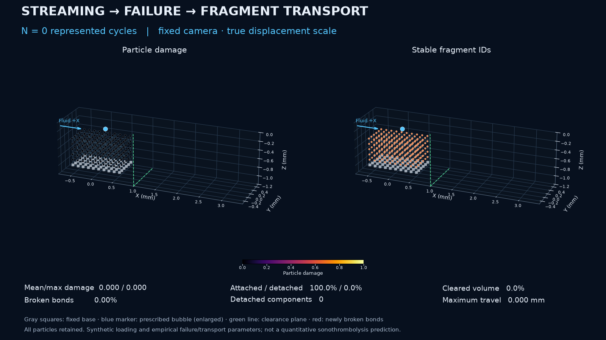

EXISTING CLOT_CLEARANCE / STRAIGHT-PIPE WORKFLOW
从损伤、断键到脱离与输运
既有 NOSB-PD 原型的独立扩展。载荷与经验循环损伤产生实际断键，脱离材料保留内部活动键并继续接受规定流体力。没有人工开裂命令，所有 360 个粒子均保留，动画使用真实位移。
Qualitative forced-failure verification · UNCALIBRATED
仅验证数值流程；不预测临床清除率、真实超声响应或实验碎片尺寸。177 个脱离分量中有 172 个单颗粒，低维支撑使用未经标定的延续近似。
首次断键N = 2,000
首次脱离N = 11,000
最终脱离体积60.555556%
最终清除体积43.333333%
逐状态查看

滑块读取保存状态，不插值或改变科学数据；首次脱离帧尚未积累明显输运距离。ID 按分裂谱系更新，显式标签显示最大的脱离分量。
完整动画
四阶段与时间历程
参数、原始数据与证据
机械代理时间 0.052 s 与 N/1 MHz = 0.025 s 的周期账本不同，均非已标定治疗时间。清除面 x = 1 mm 仅计账，不删除材料。原型仍需真实微泡流场、载荷耦合、材料与损伤参数的科学验证。